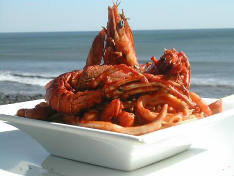

El nombre de "El Tunco" proviene de una gran roca con forma de cerdo situada en la playa. Con el tiempo se ha convertido en uno de los destinos turísticos más visitados de El Salvador.
La historia de El Tunco se relaciona con una formación rocosa en forma de cerdo que dio nombre a la playa. El nombre, que en El Salvador significa "cerdo", se debe a la apariencia de la roca semi sumergida en el mar, que en el pasado, desde cierto ángulo, sugería la forma de un cerdo acostado. Esta roca es una de las imágenes más icónicas y fotografiadas del pueblo.
Además de su nombre, El Tunco es conocido por ser un destino emblemático para el surf en El Salvador. La playa cuenta con varias rompientes, incluyendo La Bocana, una ola izquierda de calidad que atrae a surfistas avanzados y expertos. El pueblo ha experimentado un crecimiento significativo, convirtiéndose en un centro turístico con hostales, bares, restaurantes y una atmósfera vibrante, especialmente para aquellos que buscan surf y diversión.
El Tunco ofrece desde pupusas tradicionales hasta mariscos frescos y cócteles tropicales.
